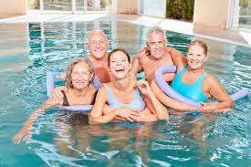
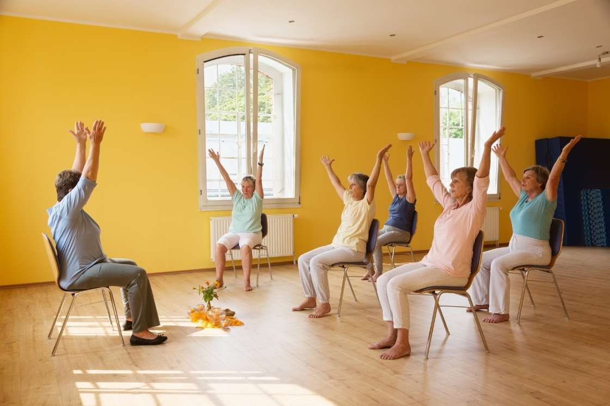
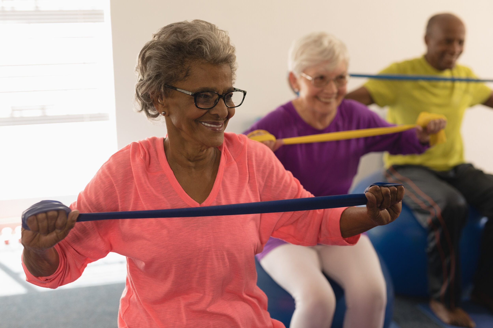
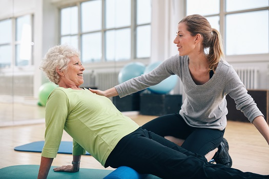
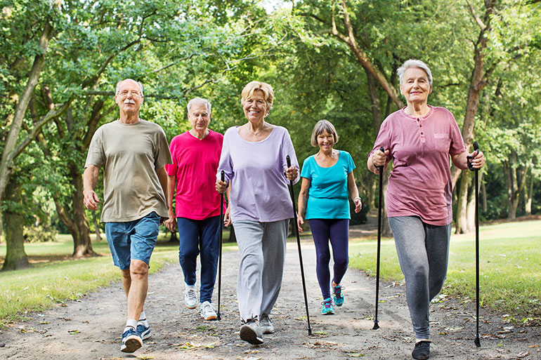
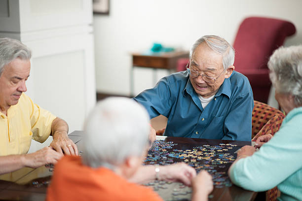
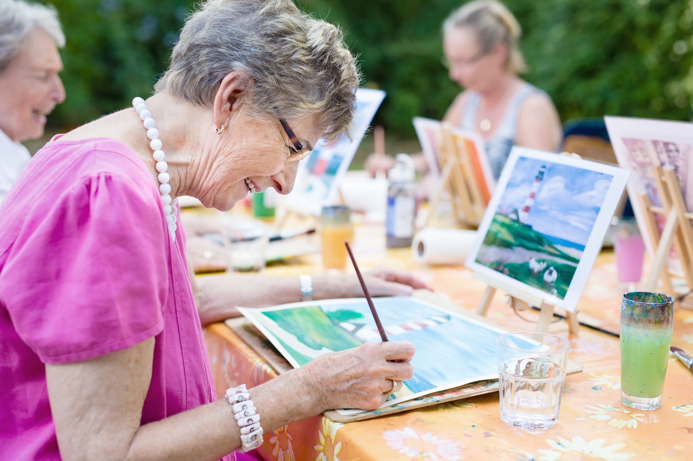
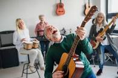
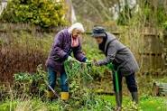
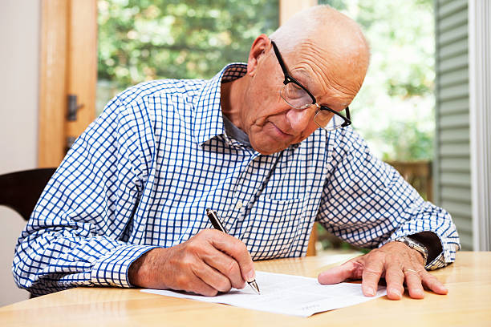

Physical Exercises
Exercise is crucial for older Seniors, but it can be hard to know where to begin. If you haven’t worked out for a while, re-entry into the active world can be daunting. There’s also a good chance the exercises you were once accustomed to aren’t ideal for older adults. Before you launch into an exercise regimen, it’s important to check with a physician to ensure you’re healthy enough for exercise, and to see which exercises are ideal for your current fitness level
- Water aerobics
- Chair Yoga
- Resistance Band Workouts
- Pilates
- Walking
In the past years, water aerobics have become an extremely popular form of exercise among all ages, but in particular to seniors. Exercising in the water is ideal for those living with arthritis and other forms of joint pain, as the buoyancy of the water puts less stress on your joints. Additionally, water brings natural resistance, which eliminates the need for weights in strength training. Water aerobics exercises improve your strength, flexibility, and balance with minimal stress on your body.

Like water aerobics, chair yoga is a low-impact form of exercise that improves muscle strength, mobility, balance and flexibility, all of which are crucial health aspects for seniors. Chair yoga is an accessible form of yoga that provides less stress on muscles, joints, and bones than more conventional forms of yoga.As an added bonus, chair yoga has been shown to improve mental health in older adults. Regular chair yoga participants have better quality sleep, lower instances of depression, and report a general sense of well-being.

Resistance bands are stretchy strips of rubber that add resistance to workouts with reduced stress on your body. Resistance band workouts are user-friendly, and accessible for beginners. This form of exercise is growing more popular among seniors because of the relatively cheap up-front costs of materials, which makes resistance band workouts ideal for at-home exercise. Additionally, these exercises are ideal for strengthening your core, which improves posture, mobility, and balance.

Pilates is a popular low-impact form of exercise that was developed a century ago. In pilates exercises, breathing, alignment, concentration and core strength are emphasized, and typically involves mats, pilates balls, and other inflated accessories to help build strength without the stress of higher-impact exercises. Pilates has been shown to improve balance, develop core strength and increase flexibility in older adults.

One of the least stressful and accessible forms of exercise is walking. For some seniors, walking is a bigger challenge than others, so distance and step goals differ from person to person. For the general population, 10,000 steps per day is advised for a healthy lifestyle, but those with difficulty walking or joint pain may settle for a smaller number as a goal. A PLOS One study found that walking 10,000 steps lowered the ten-year outlook for mortality by 46%. Walking promotes a healthy lifestyle, while strengthening muscles, lowering your risk of heart disease, stroke, diabetes, and colon cancer.

Mental Exercises
Exercising your mind is important at all ages. The brain is made up of many specialized areas and nearly 100 billion neurons. If not used consistently, the brain can become atrophied. Brain atrophy essentially destroys neurons and the connections that help cells communicate. Mental exercises help stimulate the brain and sharpen thinking, memory, reasoning, and processing skills. According to scientists, seniors can gain an additional 14 years of “cognitive youth” by practicing mental exercises.
- Puzzles
- Crafts
- Music
- Gardening
- Writing
Puzzles are among the most popular of elderly mental exercises. Science has found that solving puzzles can be advantageous for both mental health and relaxation. Additionally puzzles are easy to integrate into your daily routine and can be fun to complete alone or with friends. There are all types of puzzles to try, such as traditional jigsaw puzzles, Sudoku, or crosswords.

Creating things with your own hands is not only fun but can actually be good for your brain. Research shows people who do crafts, such as quilting or pottery, have a 30 to 50 percent decrease in risk of developing memory loss. Crafting can also help lessen anxiety, fight depression, and bring about an overall feeling of happiness. Being able to complete a craft project can also build confidence and provide seniors with a sense of purpose. There are all types of crafting projects seniors can try, such as painting, collages, sewing, knitting, ceramics, and coloring.

Music is a powerful medium that stimulates emotions, improves our attention, and boosts memory and alertness. There are many fun ways to use music as a fun mental exercise. Try learning the lyrics to a new song and practice singing it. Play a musical instrument, such as the harmonica or piano. Even chanting has been found to have a profound effect on the brain by releasing mind chatter through music.

Gardening is a popular pastime for many elderly individuals. It acts as an effective physical activity, keeping seniors active and mobile. Gardening is a great calming and wellness activity for seniors to participate in, as it has been found to reduce the stress hormone cortisol. Many researchers believe that high levels of cortisol in the body may negatively impact memory and learning. High levels of cortisol can also increase a person’s risk of developing a mental illness. There is also a strong link between gardening and reducing the risks of dementia.

Writing is one of the most underrated of all elderly mental exercises. Not only does writing stimulate brain cells, but it can also be effective at improving memory and increasing your intelligence. Some seniors prefer to use good old fashioned paper and pen to write, while others like the convenience of writing on the computer in a word document. What you write really does not matter.
